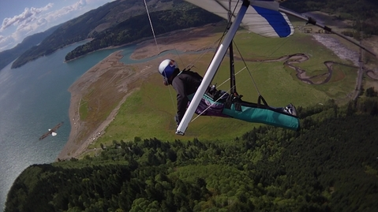
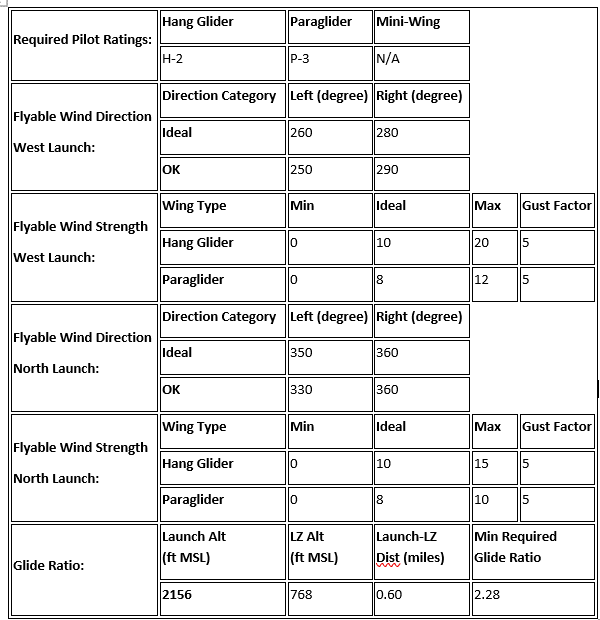
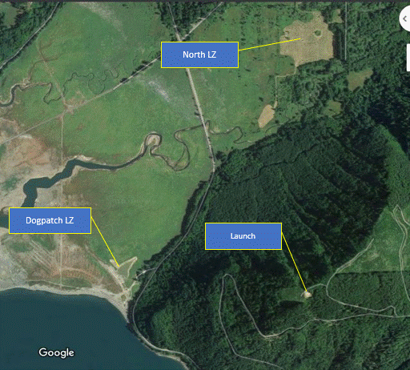
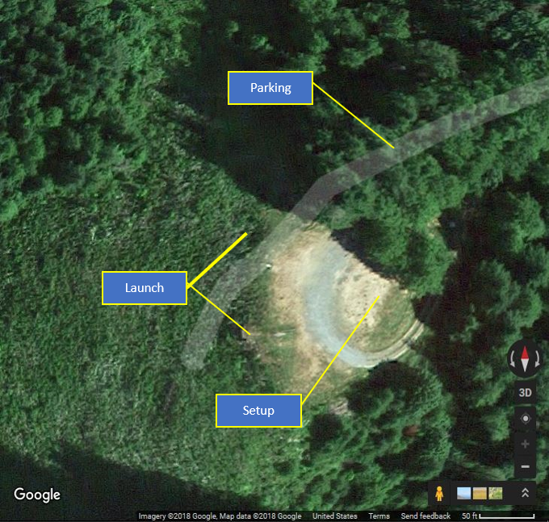
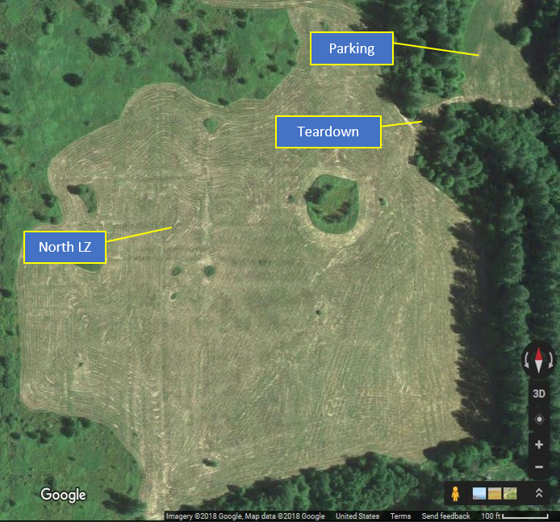
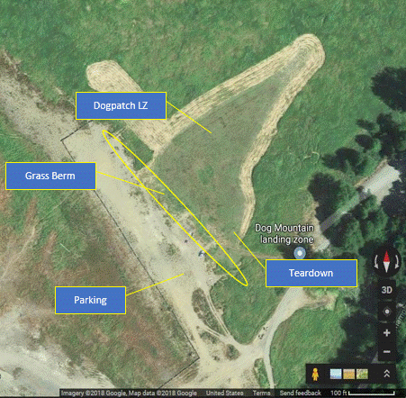

Dog Mountain
Last updated 01/13/2024 (from the club's previous website)
Download Waiver Current Conditions at Launch (Weather & Cam)
Located on the eastern side of Riffe Lake and near the towns of Morton and Glenoma, Dog Mountain is the most popular hang gliding site in western Washington because of the consistently soarable conditions throughout the year. Once above launch, pilots enjoy spectacular views of Mt. Rainier, Mt. Adams and Mt. St. Helens.
Dog Mountain is a privately owned site, and all pilots must be current USHPA and CBCC members to fly it. Additionally, the landowner maintains a locked gate at the bottom of the access road, and pilots must obtain a key and sign a waiver each year. ALL VEHICLES ACCESSING THE LAUNCH ROAD MUST CARRY $300,000 PER INCIDENT LIABILITY INSURANCE.
Cloudbase Country Club’s “home” site is H-2 friendly, especially now that the Dogpatch landing zone is accessible year round, but novice pilots must be accompanied by an H-3 or higher rated pilot mentor who can explain site protocol and potential hazards.
- Due to launch topography and rotor behind launch, P3 with solid restricted launch skills is required at a minimum.
- Launch is challenging for PG with an obvious sharp break-over from the launches to the staging plateau. Strong ground handling and canopy inflation skills are needed to avoid trees in back and to the sides of launch, and to account for consistent rotor behind the launch breakover.
- XC is unlikely due to topography and weather. Experienced pilots need to use their ground and sky reading skills if they choose to leave the ridge soaring bands on the west faces of Dog Mt.
- Venturi is to be expected to the sides of any wind-facing ridgeline.
- If crossing Riffe Lake, pilots need to pay attention to the mid-lake venturi effect and be aware of potential air traffic over the lake.
- Rotor may be encountered below west launch due to the (very obvious) tree line.
- Turbulence may be encountered below 100ft AGL at the Dogpatch LZ during strong winds due to trees at edge of lake and RVs parked in the LZ parking area.
- North launch may have right cross winds and rotor if launching outside published wind direction/speed recommendations. Cross winds are obvious when observing vegetation at and below launch.
- The site is inappropriate for mini-wing launch.

Site membership and guest access
Site membership is required before flying Dog Mountain (a discounted one-month membership is available for pilots passing through). Follow these steps to get your membership:
- Pay online through the membership page or in person.
- Bring your original completed Dog Mountain application and waiver to one of the key
holders, or mail it to:
CBCC c/o Tina Jorgensen 162 Shelton RD Randle, WA 98377
Be sure to ask for a helmet sticker when you pick up your key.
If you are unable to print out a membership waiver to sign before you arrive, there may be spare waivers in the box on launch for visiting pilots. Please be sure to give the key holder volunteers a big thanks for helping out.
Protocol
- Current USHPA and CBCC membership required.
- All pilots and HG tandem students must sign the Dog Mt. waiver, understand, and agree to the protocols contained therein to fly this site.
- Intermediate/H-3 (or Novice/H-2 w/ sponsor) minimum.
- Key memberships for vehicle access to launch are available. $300k/incident liability insurance is required for vehicle access.
- Pilots must have a minimum of Intermediate/H/P-3 rating to obtain a key.
- Re-lock gate every time after passing through. Helmet and parachute are required.
- Launch is difficult for paragliders due to extremely restricted launch space, rotor, trees, and abrupt grade changes.
- P3 with solid restricted launch skills minimum. No paraglider tandems.
- When H-2 flights are in progress, pilots are required to yield the appropriate soaring face to H2s and stay out of their way.
Flying Seasons
Spring, Fall, Summer, Winter.
Access
Gravel, 2WD, locked gate at bottom, road has one narrow and dangerous curve on cliff face. Vehicular access is restricted to the roadside parking lot, and no camping is permitted when the LZ gate is closed. You’ll need to carry your glider from the take-down area to your vehicle.
Site Details
| Launch Elevation | 2156 MSL |
|---|---|
| Launch Type | Concrete supported grass slope / ramp |
| Obstructions | None |
| Faces | W, N |
| Soarable | Yes, round trip |
| LZ Elevation | 768 MSL |
| LZ Type | Grass, lake shore |
| LZ Obstructions | Tall grass, stumps and vehicles in lake bed surrounding the mowed LZ |
| Notes | Dirty air / rotors are often present in the north LZ when wind is strong. Make sure you know the protocols for the landing area. |
| Additional Notes | Launch is owned by Port Blakely. Use of road and launch is by annual lease. Lease requires USHPA site insurance. All pilots and HG tandem students must be USHPA members, sign a waiver, and support the site via a CBCC Dog Mt Membership (details on waiver). |





Area History
Site of the 1976 U.S. Nationals.
Records
- FW Larry Jorgensen – 79 miles, Panorama to White Pass Ski resort and back to Dog Mt.
- RW Larry Jorgensen – 70 miles, Bremer Mt. to Packwood and back to Dog Mt.
FW = Flex wing hang glider, RW = Rigid wing hang glider, PG = Paraglider
Only launch within your rating and skill levels; when in doubt, don't set up or launch.
If you're in the air and the sky starts to look threatening, get out of the air immediately. Also be aware of nearby terrain and potential for rotor. (Yes, this is common-sense H1/P1 stuff, but it's here for a reason.)
All incidents should be documented via the current USHPA incident reporting protocols, with a courtesy copy to the site contact. Any incident involving non-pilot property damage, injuries, or assistance from non-pilots (EMS, police, public bystanders, etc.) must also be reported as soon as practical to the site contact.
In an emergency, call 9-1-1 first.